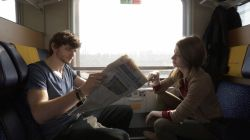

Súťažná sekcia
Let it Roll
Žáner: Stop Motion videoklip
Réžia: Jiří Gerat
Námet: Jiří Gerat, Peter Strieška
Kamera: Peter Strieška
Spolupracovali: Petr Švec
Stop-motion animace na téma písně Let It Roll od kapely Bored on Board.
Výjimka v překladu
Žáner: komédia
Réžia a námet: Jan Pater
Zvuk: Radim Kaller, Marek Galvánek, Patrik Kuffa
Kamera a strih: Radim Kaller
Scenár: Zuzana Ferková
Hrajú: Jan Pater, Beáta Beinhauerová, Michael Premus, Marek Galvánek, Miloš Selečéni, Rudo Wittner, Igor Chalás a další...
Studenta Adama čeká jeho první den studia na Fakultě informatiky. Jeho nadšení ale klesá se zjištěním, že zde všichni jeho spolužáci mluví jakýmsi nesrozumitelným dialektem.
The Choice
Žáner: štylizovaný autoportrét
Námet, réžia, hudba i herecké obsadenie všetkých rolí: Milan Skipala
Film vznikl v rámci předmětu Konceptuální a intermediální tvorba I jako stylizovaný autoportrét. Spojuje se v něm autorova záliba v elektronické hudbě a ve světelných efektech. Film zobrazuje proces rozhodování, kterému často čelí každý z nás. Tento proces může být určitou formou boje mezi alternativami. V závěru vyjde najevo, že konečné rozhodnutí může být i kompromis. Všechny tři role hraje autor, hudba a vizuální efekty jsou též jeho dílem.
Other Inside
Žáner: experimentálny triler
Námet, réžia, clona: Jiří Gerat
Kamera: Peter Strieška, Jan Šplíchal
Masky: Tereza Vlčková, Jiří Gerat
Hrajú: Patrik Boušek, Romana Švachová, Jan Šplíchal
Příběh jednoho zamyšleného mladíka, který se rozhodne vymanit z jeho každodenní rutiny a zaujmout mladou dívku, kterou náhodou poznal při procházení městem. Jaký mají ale vliv všechny okolnosti na mladíka? Může si být člověk jistý sám sebou v každé situaci?
Path of Life
Žáner: jednozáberový film
Námet: Matej Pavla, Viliam Vilkolák
Scenár, réžia: Matej Pavla, Viliam Vilkolák, Roman Kadlčík
Kamera, postprodukcia: Roman Kadlčík
Hrajú: Martin Havlíček, Viliam Vilkolák, Matej Pavla, Kristina Treschlová
Abstraktný melodický pohľad na skúsenosť zvanú život.
Pátálie kocourka Ojocha
Žáner: kreslená animovaná komédia
Námet, hudba, výtvarné spracovanie: Jakub Špiřík
Scenár: Jakub Špiřík, Jana Ludvíková, Alexandr Stankov
Animácia, strih, zvuk: Jakub Špiřík, Jana Ludvíková
Hrá: Alexandr Stankov
I kocourci chtějí mít klid.
Ze silnice na okruh
Žáner: krátký film, reklama
Réžia: Jan Stárek, Roman Kadlčík
Námet: Jan Stárek
Kamera: Roman Kadlčík
Strih a postprodukcia: Roman Kadlčík
Asistent kamery: Jan Stárek, Martin Čech
Letecké zábery: Jiří Pospíšil
Asistencia: Aleš Ligas, Kristina Treschlová, Ondřej Šimko
Fotograf: Oldřich Hrb
Hrajú: Miloš Sochor
Motorkář nasává atmosféru historie v paddocku starého Masarykova okruhu v Brně. Cítí, že potřebuje něco nového a při toulkách po místním okolí nalezne to, co hledal a to závodní dráhu nového Masarykova okruhu. Místo, po kterém se každý motorkář touží svézt.
Hranice reality
Žáner: fantasy / romantický
Réžia: Lenka Tláskalová a Roman Kadlčík
Námet a scenár: Lenka Tláskalová
Kamera: Roman Kadlčík
Strih a konečná úprava: Roman Kadlčík a Lenka Tláskalová
Hrajú: Marie Pešková, Jan Scheuer, Tereza Ordeltová, Jan Přikryl, Nikola Linhart, Matej Pavla, Jozef Vilkolák, Jan Wolf, Michaela Sekaninová, Vojtěch Škvařil, Veronika Gazaryan, Lída Rudová, Kristina Treschlová a Petr Sečkář.
Víte, jak tenká je hranice mezi realitou a fantazií světa autora?
NL's Feeling II
Žáner: video performance
Námet, kamera, stvárnenie, postprodukcia: Nikola Linhart
Hudba: Creative Commons; Monk Turner - Jocose Jon
Poďakovanie: Petr Chutný, Marek Holášek, Ondřej Ševčík
Autobiografická video performance s tendencí nevyjádřit nic a zároveň všechno, existenciální patos v 90 vteřinách
Cestujúci
Žáner: dráma
Námet, scenár, réžia: Elena Kubalíková
Kamera, strih: Roman Kelemen
Herci: Denisa Doláková, Alexander Vais, Kristína Kanátová, Róbert Sloboda
Prosím pozor, hlásenie o meškaní vlaku. Medzištátny vlak EuroCity do smeru Praha hlavní nádraží mešká z prevádzkových dôvodov 3 roky. Vlak bude pristavený na nástupište 1 koľaj 1. Ohlásená doba meškania sa už nezmení.
Fallen Angel
Žáner: akcia
Námet, scenár, réžia: Luboš Ondráček, Jiří Fabík
Kamera: Jiří Fabík, Tomáš Chalupský, David Konečný
Strih: Luboš Ondráček
Zvuk: Samuel Jurkovič
Hudba: Zdeněk Šimek
Herci: David Karas, Miloš Mikulášek
Akční tribut legendární brněnské ruině. Epicture střílí poslední gól umírajícímu stadionu!

Půlnoční rozhovor
Žáner: dráma
Námet, scenár, réžia, strih, zvuk: Antonín Holík
Kamera: Tereza Vlčková
Hudba: Jan Ševčík
Hrajú: David Matuška, Hana Zezulová, Lukáš Tesař, Zuzana Kubíková
Rozhovor Adama s nečekaným návštěvníkem o tom, co se za posledních pár hodin vlastně stalo.

Lajna
Žáner: Stop Motion Lightpainting dráma
Námet, réžia, scenár: Jiří Starý, Tomáš Šťastník
Strih, výtvarné spracovanie: Jan Starý
Hudba, hrajú: Tomáš Šťastník
O zoufalém muži...
Přežít
Žáner: atmosférický / akčný
Námet, réžia, strih, scenár: Jan Šplíchal
Kamera: Jan Šplíchal, Antonín Hojný, Jiří Gerat, Tomáš Hůsek
Hrajú: Jan Šplíchal, Tomáš Hůsek, Zbyněk Tomášek
Špeciálne poďakovanie: Antonín Holík, Jeroným Pelikovský
Největším nepřítelem je vždy člověk. Ve světě po kolapsu to však platí dvojnásob. Každou bitvou začíná vždy bitva nová. Boj nikdy nekončí...
Energy
Žáner: komédia
Námet a scenár: Matej Pavla, Viliam Vilkolák
Strih, réžia: Matej Pavla
Hrajú: Matej Pavla, Richard Záň, Viliam Vilkolák, Peter Bosák, Jozef Pavla, Peter Klein, Ján Oršuliak, Martin Škrovina, Michal Bábel, Matej Chalachán, Diana Vilkoláková
Kamera: Richard Záň
Skromný boj človeka proti osudu.
Bonusová sekcia
Nuka Cola Commercial
Žáner: reklama
Kamera, réžia, strih: Milan Doležal
Produkcia: Antonín Hojný
Námet, kamera, réžia: Dariya Romanchuk
Kostýmy, lokácia: Moravian Larb o.s.
Hrajú: Tomáš Felcman, David Franek
Reklama na Nuka Colu natočená při příležitosti prvního ročníku Fallout larpu organizovaného občanským sdružením Moravian Larp.
The Charisma Project 14
Žáner: dráma
Námet: Jan Stárek
Réžia: Jan Stárek, Roman Kadlčík
Hrajú: Jan Stárek, Aleš Ligas
Kamera: Roman Kadlčík
Strih a postprodukcia: Roman Kadlčík
Asistentka kamery: Petra Štanzlová
Řidič a nočním město. Symbolika filmu je zaměřená na lehkost bytí, která je promítnuta právě svobodou pohybu po prázdných cestách bez kolon a denního spěchu. Vše je doplněno minimalistickou hudbou Philipa Glasse.
Blíž, než bys čekal
Žáner: psychotrilergroteska
Kamera a réžia: Tereza Vlčková
Námet: Antonín Holík, Jakub Caban
Strih: Antonín Holík
Hrajú: Jiří Gerat a Jakub Caban
Procházet se sympatickou opuštěnou uličkou, užívat si podvečerní šero a ruchy velkoměsta kdesi v dálce. Jsem tu sám, jen já a kachny. Ideální chvíle na cigaretu, jednu, možná víc.
Pracovní morálka
Žáner: komédia
Námet: Jan Pater
Scénar: Zuzana Ferková
Kamera: Adam Mališ
Zvuk: Marek Galvánek
Réžia: Jan Pater
Hrajú: Jan Pater, Zuzana Ferková, Adéla Králová
Frustrovaný Frederick Jones si jde postěžovat na svou práci své nové psychiatričce. Zastihne však neopatrnou zlodějku, která využívá situace a poslouchá Fredovo vyprávění...
Fallout LARP 2014
Žáner: upútavka
Scenár, réžia: Jan Herajt
Kamera: Milan Doležal, Dariya Romanchuk, Antonín Hojný
Strih: Milan Doležal
Kostýmy: Moravian Larp, o. s.
Hrajú: účastníci Fallout larpu
Malá ochutnávka z prvního ročníku Fallot larpu organizovaného občanským sdružením Moravian Larp.
24 minut
Žáner: komédia
Námet, scenár: Antonín Hojný, Milan Doležal
Kamera: Milan Doležal, Dariya Romanchuk
Hrajú: Jan Meitner, Jiří Dočkal, Antonín Hojný, Milan Doležal
Matematický humor pro informatiky.
Bunny Fighters
Žáner: spot
Réžia: Otakar Hypš, Jan Kutil, Václav Kantor
Scenár: Otakar Hypš, Jan Kutil Jan Kutil
Námet, kamera, strih, zvuk, hudba, animácia: Jan Kutil
Hrajú: Otakar Hypš, Jan Kutil, Václav Kantor
Doprovodné video k přihlášce na akci Red Bull - Can You Make It?